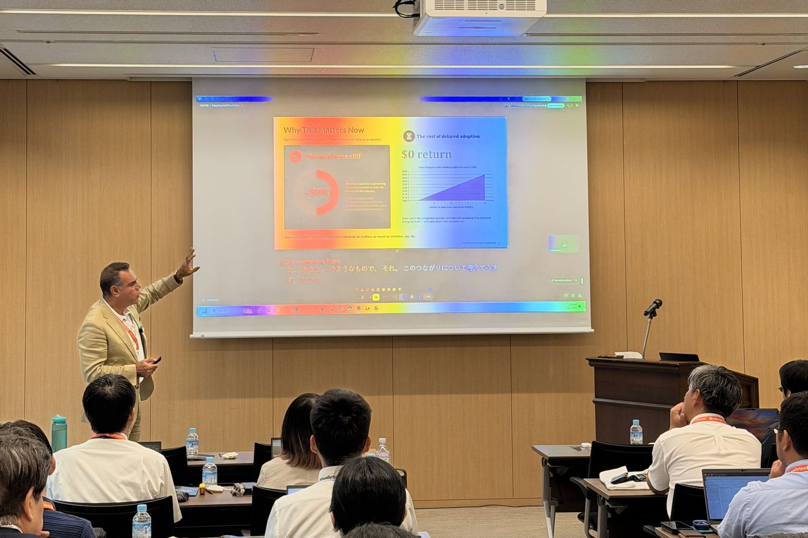
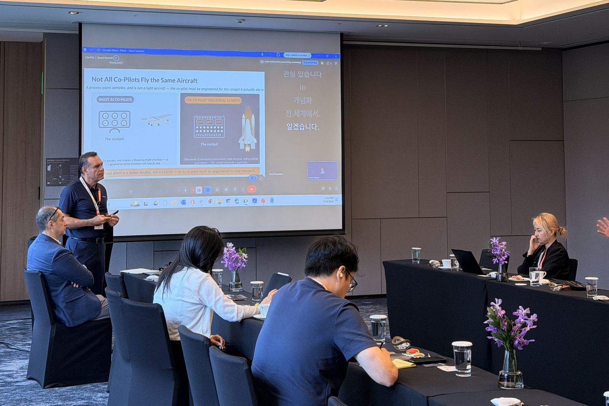
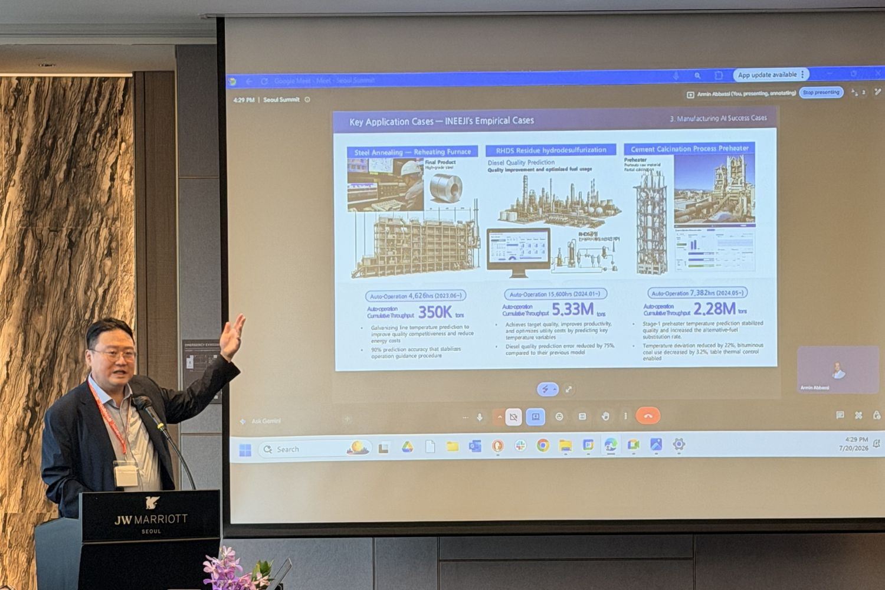
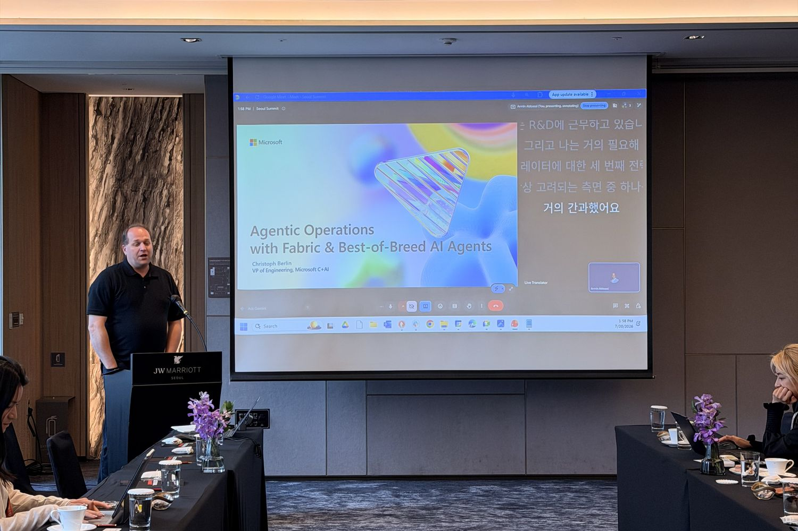

Newsroom
IntuigenceAI at The Industrial AI Summit: Tokyo and Seoul.
Two invitation-only rooms, four days apart, in July 2026. Senior leaders from Japan’s and Korea’s process industries arrived with the same test: industrial AI has to prove itself on the plant floor, not in a slide deck.
Tokyo, July 16

The Tokyo edition gathered Japan’s energy, chemical, and manufacturing leadership at AICC Akasaka for a single afternoon. Our founder and CEO, Moe Tanabian, took the stage with a deliberately narrow lens: not what industrial AI can do, but what its successful customers actually ask of it.
The independent lineup sharpened the argument. Christoph Berlin, VP Engineering at Microsoft, showed how Microsoft Fabric accelerates industrial AI workloads. Yutaka Yasunami, Energy Associate Partner at EY Japan, spoke on how manufacturers absorb technology that evolves faster than their asset base. And Professor Yoshiyuki Yamashita of the Tokyo University of Agriculture and Technology traced where AI and generative AI are already reshaping the digital transformation of chemical plants.
At the demo stations, the platform spoke for itself on real plant data: P&ID understanding, time-series analysis, and troubleshooting workflows, as they run in production. The conversations outlasted the agenda, through the demos and into dinner.
Seoul, July 20



Four days later the summit reconvened at the JW Marriott Hotel Seoul, with leaders from Korea’s energy, refining, chemical, and manufacturing industries. Different market, same standard: show it working.
This stop leaned academic. Professor Jaesik Choi, director of Korea’s Explainable AI Center and CEO of INEEJI, argued that plants will only trust AI they can interrogate, not merely AI that predicts. Professor Young Jae Jang of KAIST, one of Korea’s foremost researchers in manufacturing automation and physical AI, took on the gap between pilot projects and systems that actually run. Christoph Berlin continued the Microsoft Fabric conversation from Tokyo. Moe opened the afternoon, and the live demonstration on real plant data did the rest of the talking.
What stayed with us was the shape of the questions. Not “what is industrial AI,” but “how does it handle our tags, our historians, our P&IDs.” That shift, heard in two cities in one week, says a lot about where the process industries are heading.